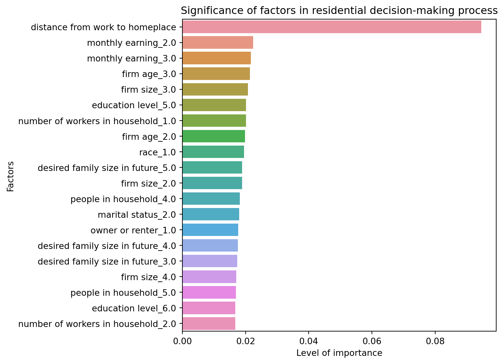

Unveiling the Tapestry of Urban Preferences for Workers On Site (WOS): A Data-Driven Glimpse into Roanoke’s Metropolitan Living Choices
Deciding where to live is a big decision for anyone, and for the people of Roanoke, it’s no different. We all have our own checklist when it comes to choosing our neighborhoods – some of us want to be close to work, others are looking for good schools for the kids, and some might prioritize a big backyard over everything else.
To get to the heart of what matters most to Roanoke’s residents, we turned to data. Using a detailed survey filled with personal insights from locals, we analyzed a range of factors from work life to family plans, all to answer one question: What drives people’s choices about where they live?
Armed with Python, a popular programming language, and a machine learning tool called Random Forest, we dug into the data. Think of Random Forest as a detective that examines all the evidence (or data) and identifies the usual suspects (or factors) that play a role in our living choices.
After some thorough data cleaning to make sure we were working with accurate information, we let the Random Forest algorithm get to work. It looked at various details about people’s lives, including how far they live from work, their family size, and their income.
import pandas as pdimport numpy as npfrom sklearn.model_selection import train_test_splitfrom sklearn.preprocessing import StandardScaler, OneHotEncoderfrom sklearn.compose import ColumnTransformerfrom sklearn.ensemble import RandomForestClassifier# Load the datasetdata = pd.read_excel('Classification (In_person_Workers).xlsx')# Replace non-breaking spaces in column namesdata.columns = data.columns.str.replace('\xa0', ' ', regex=True)# Correct any potential typos in column names# Ensure these column names exactly match those in your DataFramedata.rename(columns={'living costs ': 'living costs'}, inplace=True)# Convert the first four columns into a single ordinal dependent variable# Ensure these column names exactly match those in your DataFramearea_columns = ['City Center (Central Business District)', 'Urban area', 'Suburban area', 'Rural Area']data['PreferredArea'] = data[area_columns].idxmin(axis=1)data.drop(columns=area_columns, inplace=True)# Handle missing values (NaNs) for both features and target variabledata.dropna(inplace=True)# Define the list of categorical and continuous features# Replace these with the actual column names from your DataFramecategorical_features = ['marital status', 'race', 'education level', 'firm age', 'firm size', 'owner or renter','number of workers in household', 'people in household', 'desired family size in future','monthly earning', 'industry sector'] # Add other categorical features herecontinuous_features = ['distance from work to homeplace'] # Add other continuous features here# Preprocessing pipelinepreprocessor = ColumnTransformer( transformers=[ ('num', StandardScaler(), continuous_features), ('cat', OneHotEncoder(), categorical_features) ])# Preprocess the dataX = preprocessor.fit_transform(data.drop('PreferredArea', axis=1))y = data['PreferredArea'].astype(str) # Convert to string if categorical# Split the dataX_train, X_test, y_train, y_test = train_test_split(X, y, test_size=0.2, random_state=42)# Train the Random Forest Classifierrf = RandomForestClassifier()rf.fit(X_train, y_train)# Get feature importancesfeature_names = continuous_features +list(preprocessor.named_transformers_['cat'].get_feature_names_out(categorical_features))importances = rf.feature_importances_sorted_indices = np.argsort(importances)[::-1]# Display feature importancesprint("Feature Importances:")for i in sorted_indices:print(f'{feature_names[i]}: {importances[i]}')
Feature Importances:
distance from work to homeplace: 0.09002612946914397
monthly earning_2.0: 0.023009968591018892
firm age_3.0: 0.022066217557628148
firm age_2.0: 0.02178559852138124
monthly earning_3.0: 0.021202236546842827
education level_5.0: 0.02108766672755149
people in household_4.0: 0.020712561627613753
firm size_3.0: 0.02061758469686424
number of workers in household_1.0: 0.01987931322088943
race_1.0: 0.019170637314066253
number of workers in household_2.0: 0.018227712556543547
marital status_2.0: 0.01792009287530063
monthly earning_1.0: 0.017725399326598428
marital status_1.0: 0.017647663214915434
firm size_2.0: 0.017494778926449992
people in household_3.0: 0.01744113353445406
desired family size in future_3.0: 0.017297127480639732
desired family size in future_5.0: 0.017172156470246985
desired family size in future_2.0: 0.017159685682679497
number of workers in household_3.0: 0.01658143581927266
firm age_4.0: 0.016554662514985195
owner or renter_2.0: 0.016546727139497674
education level_2.0: 0.016361787784908096
firm age_5.0: 0.01617195897267983
desired family size in future_4.0: 0.01613628436333632
education level_6.0: 0.015963605218692858
people in household_5.0: 0.015499605537140977
industry sector_Wholesale Trade: 0.015405581044116481
owner or renter_1.0: 0.015366799522148065
industry sector_Retail Trade: 0.014128715730823135
people in household_2.0: 0.013755035240451565
firm size_4.0: 0.013680838762537438
desired family size in future_1.0: 0.013142519737222351
industry sector_Manufacturing: 0.013123564815275641
firm size_5.0: 0.013121656767595385
firm size_1.0: 0.012925121482568677
education level_3.0: 0.011762777181883038
industry sector_Mining, Quarrying, and Oil and Gas Extraction: 0.011660015892781065
education level_8.0: 0.011494696532905956
industry sector_Management of Companies and Enterprises: 0.011191786850415112
industry sector_Professional, Scientific, and Technical Services: 0.011074737987177273
industry sector_Transportation and Warehousing: 0.010992139215513192
monthly earning_4.0: 0.010804431753287986
race_3.0: 0.010657472708133386
education level_7.0: 0.010494554394713536
race_4.0: 0.010301577275841302
marital status_5.0: 0.010224017252462966
race_2.0: 0.010084721094465638
marital status_6.0: 0.009740825402188322
industry sector_Accommodation and Food Services: 0.009584908298269924
people in household_1.0: 0.009397885983715973
industry sector_Educational Services: 0.009150833265968035
firm age_1.0: 0.009067843560460899
industry sector_Construction: 0.008759722771524496
industry sector_Finance and Insurance: 0.00848243917039083
marital status_3.0: 0.008434947179675965
industry sector_Information: 0.00828232753547185
race_8.0: 0.008000592702388799
education level_4.0: 0.007984970818286176
race_5.0: 0.007826833389725398
race_6.0: 0.007525632388179478
industry sector_Other Services [except Public Administration: 0.007489751645997572
education level_1.0: 0.007209285876944427
marital status_4.0: 0.006995018142928353
industry sector_Health Care and Social Assistance: 0.006623366898713113
race_7.0: 0.006498596306725328
industry sector_Agriculture, Forestry, Fishing and Hunting: 0.006475940870469769
industry sector_Utilities: 0.006014659612348908
industry sector_Arts, Entertainment, and Recreation: 0.005358401035027692
industry sector_Administrative and Support and Waste Management and Remediation Services: 0.004379128546677525
industry sector_Real Estate and Rental and Leasing: 0.003934044212507423
industry sector_Public Administration: 0.003929551451752581
The results were clear: The commute to work stood out as the number one factor. This wasn’t too surprising – after all, who wants to spend hours in traffic when they could be home relaxing? Income was also a key factor. It seems the more we earn, the more choices we have about where we live.
But it’s not all about money and travel time. The data also showed us that personal factors, like whether someone is married or planning for a big family, have a big say in the decision too.
This isn’t just interesting information. It’s valuable knowledge for city planners and developers. By understanding what’s important to residents, they can plan and build communities that better meet people’s needs and make Roanoke an even better place to live.
So next time you’re driving through Roanoke’s neighborhoods, remember that each home you see represents a decision made based on a unique mix of practical needs and personal dreams.
import matplotlib.pyplot as pltimport seaborn as sns# Assuming 'importances', 'feature_names' are already defined as in your previous code# Sorting the feature importancessorted_indices = np.argsort(importances)[::-1]sorted_importances = importances[sorted_indices]sorted_features = [feature_names[i] for i in sorted_indices]# Selecting a number of top features to display (you can adjust this number)n_top_features =20# for example, top 20 features# Creating the plotplt.figure(figsize=(10, 8))sns.barplot(x=sorted_importances[:n_top_features], y=sorted_features[:n_top_features])plt.title('Top Feature Importances')plt.xlabel('Importance')plt.ylabel('Feature')plt.show()

A Visual Journey Through Roanoke’s Residential Decision Drivers
In our previous discussion, we delved into the factors that influence where workers on-site (WOS) in Roanoke choose to live. We discovered that the daily commute and income levels are among the top considerations. But how do these factors stack up against each other? Let’s take a visual dive into the data.
The accompanying chart lays out the findings from our Random Forest analysis in a colorful display of bars, each representing a factor’s weight in the decision-making process. At a glance, the lengthier bars catch the eye—these are the heavy hitters of home location preferences.
Note: Replace the placeholder with the actual path to your image.
Dominating the scene is ‘distance from work to homeplace,’ a beacon of red at the top, which resonates with anyone who’s ever been caught in the snarl of rush hour. This is followed closely by a cascade of oranges and yellows highlighting the importance of ‘monthly earnings’ across various brackets and the age and size of firms.
As we move down the chart, the colors shift to cooler greens and blues, representing factors like household size and marital status. These may not be the titans of the plot, but they still play a pivotal role in the collective narrative of where we live.
What’s truly intriguing is the story this visual tells us—beyond numbers and models, it’s about real-life choices and priorities. For instance, the significance of ‘people in household_4.0’ and ‘education level_5.0’ (a bachelor’s degree) speaks to the aspirations and day-to-day realities that shape our sense of place.
City planners and housing developers, take note: this chart is more than just a pretty picture. It’s a roadmap to the hearts and minds of Roanoke’s residents, guiding the way to communities that not only house but also support and enrich their lives.
As we continue to shape Roanoke’s urban landscape, let’s keep these visual cues in mind, ensuring that every development, from high-rises to townhomes, aligns with the genuine preferences of those who will call them home. After all, understanding these preferences is the key to building not just houses but homes where life’s stories can unfold.
 Note: Replace the placeholder with the actual path to your image.
Note: Replace the placeholder with the actual path to your image.